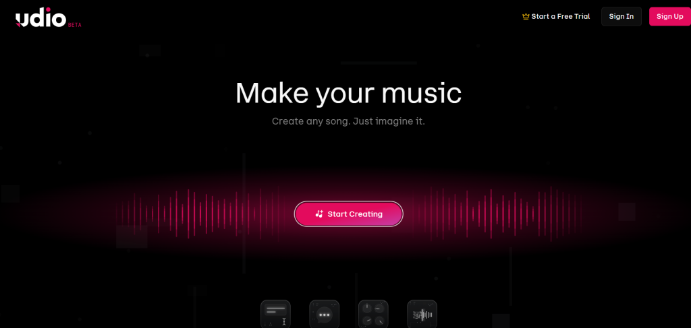
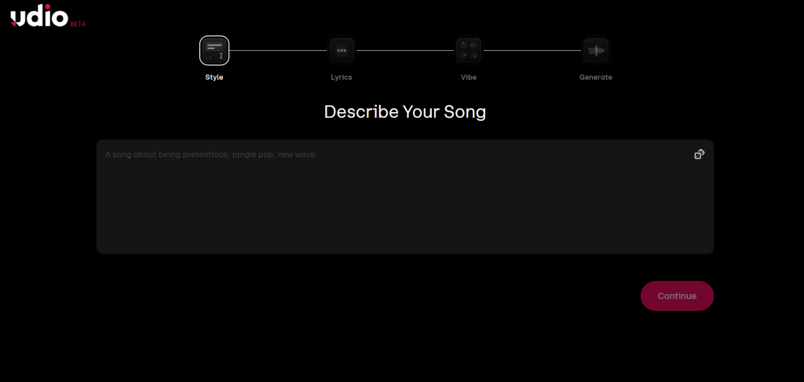
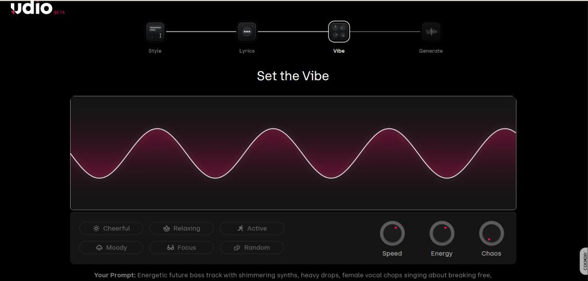
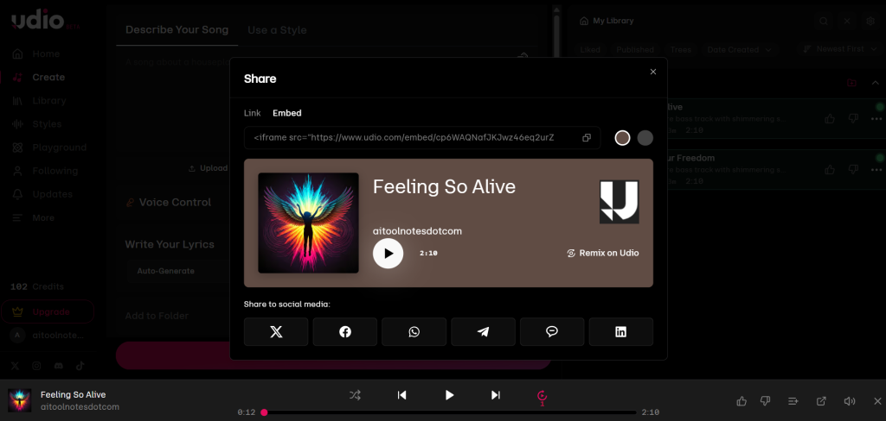

I’ve spent the last few months testing every major AI music tool out there — from quick prompt-and-go platforms to full production suites. Udio consistently rises to the top when I need more than just a catchy hook. It feels like a real creative partner rather than a black-box generator.
Quick Verdict
Rating: 8.8/10 Udio AI is one of the strongest AI song generators in 2026 for creators who want control, not just speed.
Best for: YouTube creators, indie producers, podcasters, and anyone who wants to edit, extend, and polish tracks before export. Key strengths: Excellent inpainting, timeline-style editing, strong instrumental layering, and coherent full-song structures. Biggest weaknesses: Credit limits on the free tier burn fast, occasional vocal artifacts on complex lyrics, and you’ll want the paid plan for stems and commercial use.
If you’re serious about turning AI output into finished, monetizable music, Udio delivers. For pure instant gratification with zero editing, some competitors edge it out.

What Is Udio AI?
Udio is an AI-powered music platform that turns simple text descriptions into full songs with vocals, instrumentation, and professional-sounding production. No music theory required — you just describe the vibe, genre, lyrics, or mood, and it generates complete tracks in seconds.
Founded by ex-Google DeepMind researchers, Udio has partnered with big names in music like will.i.am, Common, and Tay Keith. The result? A tool that feels surprisingly musical and human-like rather than robotic.
You type a prompt like “melancholic jazz ballad about winter nights in a smoky lounge, female vocals, slow swing rhythm” and get back two variations with lyrics, melody, and arrangement already in place. Then the real fun begins: editing, extending, and refining.
My Experience Testing Udio AI
I put Udio through its paces over three weeks with real creator workflows. I tested it for YouTube background music, lo-fi study beats, cinematic trailers, hip-hop tracks, and even a pop single for a client project.
Prompts I tested:
- “Upbeat tropical house track with tropical percussion, female vocals singing about summer freedom, festival energy”
- “Dark cinematic orchestral score for a thriller movie trailer, no vocals, brooding strings and pulsing bass”
- “Lo-fi chillhop beat with rainy window sounds, male rap verses about late-night city drives”
- “Emotional indie folk ballad with acoustic guitar, heartfelt male vocals about heartbreak and moving on”
What impressed me most: The vocal quality is genuinely emotional — you hear breath, vibrato, and subtle phrasing that feels alive. Instrumentals shine even brighter; the layering and dynamic shifts in genres like cinematic or electronic feel studio-ready right out of the gate. Generation speed is fast (10–30 seconds for a full 2-minute clip), and the extension feature lets you keep building the song seamlessly.
The inpainting and timeline editing blew me away. I generated a solid pop track but hated the second verse. Instead of regenerating everything, I highlighted just that section, typed a new prompt, and Udio fixed only that part while keeping the rest intact. Game-changer for creators on tight deadlines.
Biggest frustrations: Free-tier credits disappear quickly when you iterate (and you will iterate). Some generations needed 2–3 retries for perfect lyric flow or vocal clarity, especially with long or very specific lyrics. Occasionally the AI hallucinates weird pronunciations or off-pitch moments that need fixing.
Comparison with Suno and Sonauto (hands-on): Suno still wins for raw vocal clarity and instant full-song satisfaction — it feels faster for beginners. But Udio beats it on editing control and instrumental depth. Sonauto (check my full Sonauto review) offers unlimited free generations, which is fantastic for experimentation, but its editing tools lag behind Udio’s timeline and inpainting.
Overall, after testing 50+ tracks across genres, Udio became my go-to when I needed something I could actually produce further in a DAW. It’s not always the fastest, but it’s the most satisfying once you learn its workflow.

Key Features of Udio AI
Here’s how the main features actually work in practice:
Text-to-Music Generation Describe anything in natural language and get two variations. The more specific (genre tags, mood, structure, reference artists), the better the output. It handles complex prompts better than most tools I’ve tried.
Inpainting and Section Editing Highlight any part of the track on the timeline and regenerate just that section. This is Udio’s killer feature — no more scrapping entire songs because of one weak chorus.
Song Extension Extend tracks in 30-second chunks. Perfect for turning a 2-minute demo into a full 3–4 minute song without losing continuity.
Stem Export Available on paid plans. Download separate WAV stems for vocals, drums, bass, and other elements. I’ve taken these straight into Ableton and Logic — huge time-saver.
Audio Quality 48000 Hz, 32-bit, stereo, full frequency range up to 20 kHz. Clean, dynamic, and radio-ready in most cases.
Community Features Publish tracks publicly, discover what others are making, and get inspired. The social layer adds real creative energy.
Prompt Controls Style tags, custom lyrics, mood descriptors, and audio uploads for reference all give you fine-tuned control.
Udio Pricing Plans
Udio uses a credit system. One credit roughly equals one 2-minute generation.
| Plan | Price (monthly / annual) | Credits per month | Key Benefits | Best For |
|---|---|---|---|---|
| Free | $0 | 10/day + 100 bonus | Basic generations, public tracks only | Testing the waters |
| Standard | $10 ($8 annual) | 2,400 | Advanced editing, private tracks, higher quality exports | Regular creators |
| Pro | $30 ($24 annual) | 6,000 | Bulk downloads, stem exports, commercial rights | Power users & professionals |
Note: Paid plans unlock the features that make Udio truly useful (inpainting, stems, private projects). Credits don’t roll over, so plan your usage.
Udio vs Suno vs Sonauto
Here’s a clear side-by-side comparison based on my testing:
| Feature | Udio | Suno | Sonauto |
|---|---|---|---|
| Free Plan | Limited (10/day) | More generous | Unlimited generations |
| Vocal Quality | Excellent emotion | Top-tier clarity | Strong & improving |
| Editing Tools | Advanced (inpainting + timeline) | Moderate | Good |
| Stem Export | Yes (paid) | Yes (higher tiers) | Yes |
| Song Extension | Excellent | Good | Basic |
| Commercial Rights | Clear on Pro | Clear on paid | Less clear |
| Best For | Production control | Speed & beginners | Free experimentation |
Detailed analysis: Udio wins for creators who want to build and refine music. Its inpainting and extension features give you pro-level control that Suno and Sonauto don’t match yet. Suno feels quicker for complete songs out of the box, while Sonauto AI review shines if you want unlimited free plays and don’t mind lighter editing. For most YouTube creators and indie musicians, Udio strikes the best balance once you’re past the learning curve.
Best Prompting Tips for Udio
Good prompts = dramatically better results.
Pro tips I use:
- Be specific: “cinematic orchestral trailer music, epic brass swells, tense strings, no vocals, Hans Zimmer style”
- Structure it: “verse-chorus-verse, upbeat pop, female vocals, lyrics about chasing dreams”
- For YouTube background music: “royalty-free lo-fi hip-hop beat, chill atmosphere, no lyrics, study focus”
- Emotional prompts: “heartbreaking piano ballad, male vocals with raw emotion, minimal production”
- Instrumental only: Always add “instrumental” or “no vocals” at the end.
Example prompt that worked great: “Energetic future bass track with shimmering synths, heavy drops, female vocal chops singing about breaking free, festival energy, 128 BPM”

Who Should Use Udio AI?
- YouTube and TikTok creators needing custom background music
- Indie musicians and producers looking for inspiration or stems
- Podcasters and content creators who want original audio
- Educators teaching music structure
It pairs beautifully with other AI tools for content creation and AI talking avatar generators for full video packages. Combine it with AI voice tools or my Murf AI review for narration workflows.
Who Should Avoid It?
- Complete beginners who want zero editing (try Sonauto first)
- Anyone on a tight budget who hates credit limits
- Users needing guaranteed 100% commercial-safe music without checking terms
Strengths and Weaknesses
Strengths:
- Powerful editing tools (inpainting is addictive)
- High-quality instrumentals and emotional vocals
- Clean stem exports for DAW work
- Iterative workflow feels creative, not mechanical
Weaknesses:
- Free tier runs out fast during heavy testing
- Some generations still need retries
- Licensing landscape is still evolving (more below)
Legal and Commercial Rights Concerns
This is the elephant in the room for every AI music tool in 2026.
Udio settled with Universal Music Group in October 2025. That settlement created clearer licensing paths, but the full picture with other labels is still settling.
What YouTubers should know: Paid plans generally allow commercial use, but always double-check current terms before uploading to monetized channels.
Spotify / streaming creators: Commercial rights are clearer on Pro plans, but some platforms still flag heavy AI-generated content.
General advice: Treat Udio output like any licensed music — read the latest terms on udio.com before monetizing. The platform has made big strides since the RIAA lawsuits, but it’s smart to stay cautious.
Final Verdict
Udio AI is absolutely worth it in 2026 if you value control, editing power, and production-quality output. The Standard plan at $10/month is excellent value for regular creators, and the Pro tier makes sense once you’re producing at volume.
It’s not the absolute easiest tool for total beginners (Sonauto wins there), but once you learn the workflow, it becomes incredibly powerful. For YouTube creators, indie artists, and anyone building a content library, Udio delivers results that actually sound professional.
If you’re ready to move beyond simple demos and into real production, Udio is one of the best AI music generators available right now.

Frequently Asked Questions
Is Udio AI free? Yes, there’s a usable free tier with 10 credits per day plus a 100-credit monthly bonus. It’s great for testing but limited for serious work.
Is Udio better than Suno? It depends. Udio offers better editing tools and instrumental quality. Suno often feels faster with stronger raw vocals. Many creators use both.
Can I monetize Udio songs? Yes on paid plans, but always verify the latest commercial rights in the terms of service.
Is Udio copyright free? No tool is 100% risk-free, but paid plans provide clearer licensing after the 2025 label settlements. Check current status before commercial use.
Does Udio support custom lyrics? Yes — you can write your own lyrics or let it generate them.
Is Udio good for YouTube creators? Excellent. Custom background tracks, jingles, and intros save huge licensing headaches.
Does Udio offer stem exports? Yes, on Standard and Pro plans.
Can Udio create full songs? Yes. You can generate 2-minute clips and extend them into full 3–5 minute tracks easily.
Ready to try it? Head to udio.com and start with the free tier — you’ll quickly see why so many creators are hooked.
What genre are you planning to create first? Drop it in the comments — I’m always happy to share prompt tips that actually work.